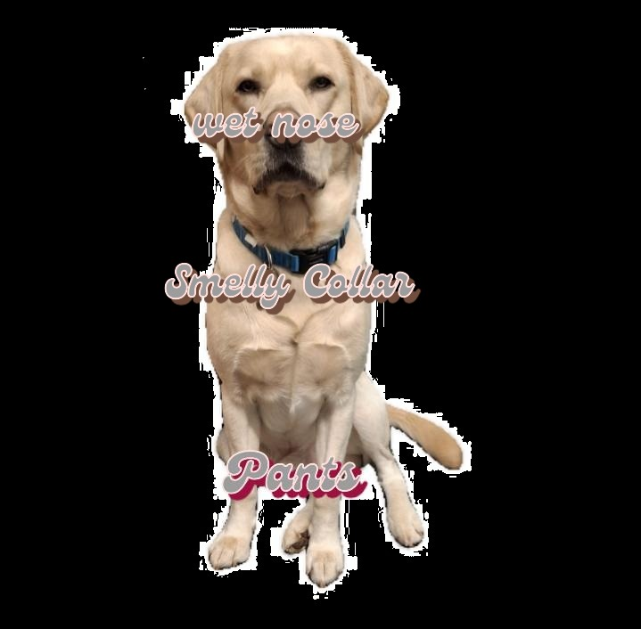

What Might Be Next?
Ideas. Dogs. Strange ambitions.
Kenny Lambador™
If this does well? (Please, pleeeease let it do well!!). Another project starring this dog 👇 who is either deeply philosophical or just confused by vacuum cleaners. His name is Kenny. He sits, he stands, he lies down and is always in the way. Is he cute? Yes. Is he annoying? Also, yes. Is he silently judging you, and my editing skills? Obviously, yes.
Also Possibly Coming:
- A zine (I don't even know what a 'zine' is. I'm old) called Draw Your ND
- Chaos Goblin™: The Movie (Hello Aardman)
- “Where Is My Stuff™?” – A memoir in lost objects
- A badge that says Helping You Untidy™
- A lunch box that says Goblin It Up™!
None of this is confirmed. All of this is possible. Maybe.